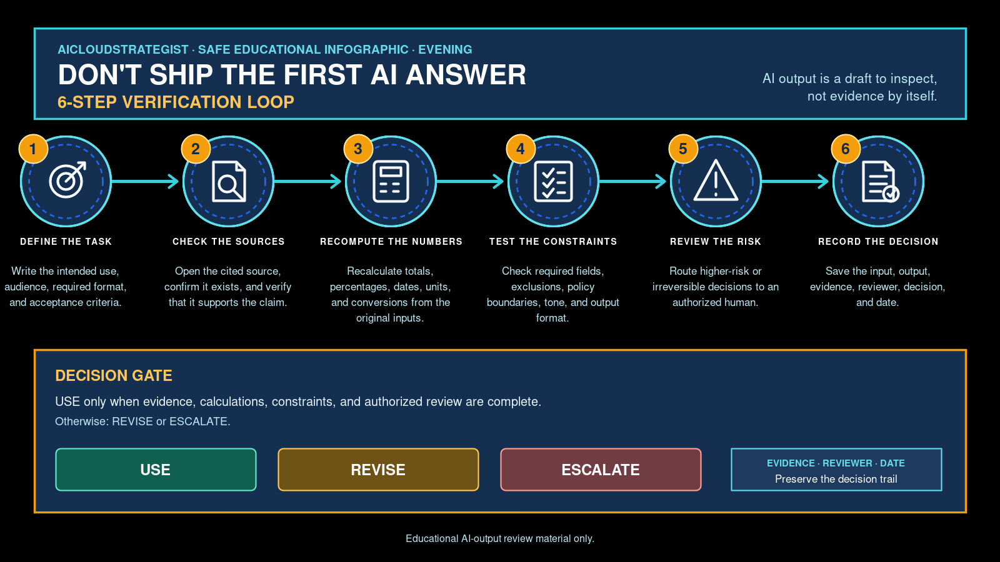

Define The Task
Write the intended use, audience, required format, and acceptance criteria.
AICloudStrategist safe educational publication · Evening · 2026-11-24
A practical educational workflow for checking sources, calculations, constraints, risk, and review evidence before using AI-generated work.

Write the intended use, audience, required format, and acceptance criteria.
Open the cited source, confirm it exists, and verify that it supports the claim.
Recalculate totals, percentages, dates, units, and conversions from the original inputs.
Check required fields, exclusions, policy boundaries, tone, and output format.
Route higher-risk or irreversible decisions to an authorized human.
Save the input, output, evidence, reviewer, decision, and date.
Use only when evidence, calculations, constraints, and authorized review are complete. Otherwise revise or escalate.
Download the review worksheet (CSV) · Read the plain-text edition
Proof boundary: Educational AI-output review material only — not legal, financial, security, privacy, safety, compliance, or professional advice. No client results, certifications, rankings, savings, or guarantees are claimed.